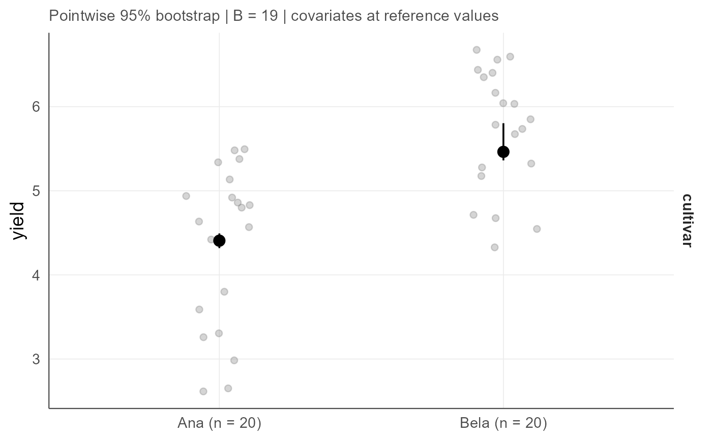

Response summaries at each level of the qualitative predictors
agri_np_levels.RdDescribes the response at every level of every qualitative predictor of a regression fit: the number of observations, the location and spread of the observed response, and the fitted marginal response with a pointwise bootstrap interval, holding the other covariates at their reference values.
Usage
agri_np_levels(
object,
level = 0.95,
B = 499L,
seed = 1,
bootstrap = NULL,
cluster = NULL,
fixed = list()
)Arguments
- object
An
agri_np_reg_fitwith at least one qualitative predictor.- level
Confidence level of the bootstrap intervals.
- B
Number of bootstrap replications when
bootstrapis not supplied.- seed
Random seed.
- bootstrap
Optional
agri_np_bootstrapobject computed withtarget = "curve"on the level grid. When absent, one is computed here.- cluster
Optional cluster variable passed to
agri_np_bootstrap; the declared agronomic block is used by default when available.- fixed
Named values for other covariates, replacing the reference values used for the prediction.
Details
This summary is the level-oriented companion of the coefficient-oriented agri_np_forest. A coefficient of a qualitative factor is a contrast against the reference level; this table and the corresponding figure, agri_np_plot(object, type = "levels"), state instead what the model predicts at each level itself. Both readings are legitimate and the package keeps them separate, because manuscripts usually report the response AT each level while referees may ask for the contrast.
Numeric covariates are held at their median and an integer-support predictor at the admissible support value closest to the median, because values between support points do not exist. Intervals are pointwise bootstrap percentile limits; use agri_np_bootstrap directly with band = "simultaneous" when a statement refers to all levels jointly.
Value
A data frame with one row per factor level: factor, level, n, the observed response_median, response_mad, response_mean and response_sd, and the fitted fit with lower and upper limits. The bootstrap metadata is stored in attributes.
Examples
data(agri_dose)
dz <- agri_dose
# Two cultivars that share the nitrogen response but differ in baseline
# yield (Mg/ha).
dz$cultivar <- factor(rep(c("Ana", "Bela"), length.out = nrow(dz)))
dz$yield <- dz$yield + ifelse(dz$cultivar == "Bela", 0.9, 0)
if (requireNamespace("quantreg", quietly = TRUE)) {
fit <- agri_np_regression(yield ~ dose + cultivar, dz, method = "quantile")
# B = 19 keeps this example fast; a real analysis needs B >= 999.
lv <- agri_np_levels(fit, B = 19, seed = 1)
lv
# Bela's fitted median yield sits about 0.9 Mg/ha above Ana's at the
# median nitrogen rate, the same shift the cultivar coefficient states
# as a contrast against the reference level. The figure reuses the same
# bootstrap object instead of refitting it.
agri_np_plot(fit, type = "levels", bootstrap = attr(lv, "bootstrap"))
}
#> Warning: Solution may be nonunique
#> Warning: Solution may be nonunique
#> Warning: Solution may be nonunique
#> Warning: Solution may be nonunique
#> Warning: Solution may be nonunique
#> Warning: Solution may be nonunique
#> Warning: Solution may be nonunique
#> Warning: Solution may be nonunique
#> Warning: Solution may be nonunique
#> Warning: Solution may be nonunique
#> Warning: Solution may be nonunique
#> Warning: Solution may be nonunique
#> Warning: Solution may be nonunique
#> Warning: Solution may be nonunique
#> Warning: Solution may be nonunique
